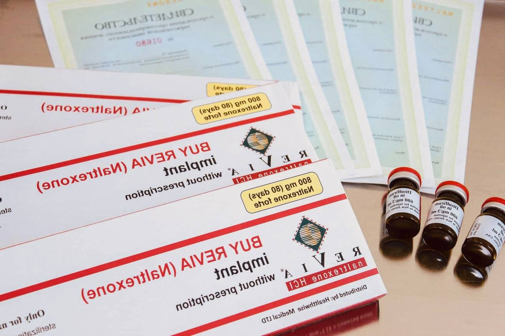

+38(068) 79 72 782
+38(068) 79 72 782Подшивка от алкоголизма Харьков
Хирургический метод лечения алкогольной зависимости в Харькове
Работаем в Одессе, Киеве, Львове, Харькове, Днепре, Запорожье, Черноморске


Бесплатная консультация, работаем круглосуточно 24/7
Хирургический метод лечения алкогольной зависимости в Харькове
Работаем в Одессе, Киеве, Львове, Харькове, Днепре, Запорожье, Черноморске
Подшивка от алкоголя, известная как “торпеда”, представляет собой эффективный хирургический метод лечения алкогольной зависимости. Суть метода заключается в имплантации под кожу капсулы, содержащей концентрированную дозу дисульфирама. Этот препарат вызывает крайне неприятную и опасную токсическую реакцию, если пациент употребляет спиртное. Процедуру проводит квалифицированный врач-нарколог, имеющий опыт в общей хирургии. Главная цель подшивки – создать прочную основу для будущей трезвости, делая употребление алкоголя невозможным как на физиологическом, так и на психологическом уровне.
Кодирование методом подшивки-торпеды направлено на формирование стойкого отвращения к любому алкоголю. Перед процедурой крайне важно полностью воздержаться от алкоголя минимум за 5 дней. Сама подшивка выполняется под местной анестезией: врач делает небольшой разрез в подкожной клетчатке, вводит капсулу с препаратом, после чего рана зашивается. Пациент находится под наблюдением в стационаре около суток, а затем может быть выписан домой.
“Торпеда” — это общепринятое название для хирургического имплантата с действующим веществом дисульфирам (на рынке препарат часто встречается под названием “Еспираль”). Этот имплант работает, блокируя фермент алкогольдегидрогеназу, который отвечает за расщепление алкоголя в организме. В результате при употреблении спиртного происходит накопление токсичного вещества ацетальдегида, что вызывает сильнейший токсический эффект:
В условиях такой тяжелой интоксикации возможны серьезные осложнения, такие как кровохарканье, инфаркт, инсульт, остановка сердца и дыхания. Перед проведением имплантации пациент в обязательном порядке подписывает информированное согласие, осознавая все риски.
В Харькове подшивку от алкоголизма можно пройти в медицинской службе UmbrellaPlus “Безопасная наркология”. Перед визитом наш нарколог проведет телефонную консультацию и при необходимости назначит дополнительные анализы. После процедуры пациент получает справку о лечении. Для записи на консультацию звоните по номеру: 050-021-69-57.
Помимо подшивки, существуют и другие эффективные методы кодирования:
UmbrellaPlus “Безопасная наркология” предлагает услуги по подшивке в более чем шести крупных городах Украины. Операция проводится как в специализированных наркологических центрах, так и в городских стационарных больницах в отделениях психиатрии и наркологии, под контролем опытного врача-нарколога или хирурга.
Важно понимать, что подшивка не является самостоятельным лечением зависимости. Ее основная задача – создать “коридор” для будущей самостоятельной трезвости. Процедура должна обязательно сопровождаться длительной психотерапией, направленной на разрушение ложных убеждений об алкоголе и формирование у пациента устойчивого отвращения к спиртному. Эффективное лечение алкоголизма — это всегда комплексный процесс, включающий работу как с органической, так и с психологической составляющими здоровья пациента.
Стоимость подшивки от алкоголизма в Харькове начинается от 9 999 грн.
| Все Услуги | UmbrellaPlus | Харьков | Цена |
|---|---|
| Лечение алкоголизма Харьков | От 1699 грн |
| Капельница от алкоголя Харьков | От 1699 грн |
| Капельница от алкоголя на дому Харьков | От 1999 грн |
| Вывод из запоя Харьков | От 1699 грн |
| Вывод из запоя на дому Харьков | От 1999 грн |
| Лечение пивного алкоголизма Харьков | От 1699 грн |
| Лечение женского алкоголизм Харьков | От 1699 грн |
| Кодирование от алкоголизма Харьков | От 3999 грн |
| Кодирование от алкоголизма укол Дисульфирам | От 3999 грн |
| Кодирование от алкоголизма укол Эспераль | От 5999 грн |
| Подшивка от алкоголя Харьков | От 9999 грн |
Подшиться от алкоголя в Харькове может любой человек, страдающий алкогольной зависимостью. Однако подшивка — это радикальный метод, который никогда не является первым этапом лечения. Вначале рекомендуется психотерапия. При необходимости медикаментозной поддержки могут быть применены укол дисульфирама или “Еспираль” в меньшей дозировке. Эти средства хорошо переносятся и формируют отвращение к спиртному на уровне, схожем с подшивкой, но с меньшей инвазивностью. Подшивка показана лишь в тех случаях, когда другие, менее инвазивные методы (например, укол) оказываются неэффективными из-за привыкания или недостаточной дозировки.
Отзывы наших пациентов вы можете прочитать на нашем сайте или в разделе “Отзывы” на Google Maps.
Кодировка уколом является более безопасным и доступным методом лечения алкогольной зависимости по сравнению с подшивкой. Как укол, так и подшивка эффективно формируют у пациента стойкое отвращение к спиртному, делая любое употребление невозможным. Химические методы кодирования — это важный, но радикальный этап комплексного лечения. Если ваш близкий страдает от алкоголизма, не откладывайте обращение за помощью: зависимость всегда прогрессирует, и без комбинированной терапии (психотерапия + медикаменты) выздоровление крайне маловероятно.
Врач-нарколог — это специалист с высшим медицинским образованием в области психиатрии и наркологии. Его основная задача – лечение всех видов зависимостей, включая алкогольную. При наличии острых или хронических органических патологий к лечению подключаются смежные специалисты. Вызвать нарколога на дом или записаться на консультацию можно по телефону: 050-021-69-57.
Готовы сделать решительный шаг к трезвости? Свяжитесь с нами, чтобы узнать больше о подходящих методах лечения.
Анонимно

"Дуже довго не міг самостійно позбавитися залежності, тому зважився на підшивку. Процедура пройшла успішно, і з того часу я навіть не думаю про спиртне. Страх перед можливими наслідками допомагає триматися на плаву, а підтримка фахівців – величезна підмога у цьому нелегкому шляху. Центр надає як фізичну, а й моральну допомогу. Вдячний їм за другий шанс."
Анонимно
"Решила сделать укол от алкоголизма по рекомендации подруги, которая проходила эту процедуру в этом же центре. Я сомневалась, но врачи всё объяснили, успокоили. После укола не чувствую тяги к алкоголю, хотя раньше сложно было представить день без выпивки. Сейчас наслаждаюсь трезвостью, чувствую себя намного лучше."
Анонимно
"Я никогда не думал, что психологическое воздействие может настолько сильно повлиять на мою жизнь. Врач помог осознать всю серьезность ситуации, и теперь алкоголь не вызывает у меня никакого интереса. Процедура безопасна и эффективна, рекомендую тем, кто хочет по-настоящему изменить свою жизнь."
Анонимно
"Я прошла кодирование гипнозом, и это было удивительное переживание. Во время сеанса я почувствовала глубокое расслабление, а потом – будто внутри что-то изменилось. Сейчас я свободна от алкоголя и наслаждаюсь этим состоянием. Благодарю центр за профессионализм и заботу! Отдельная благодарность Станиславу Вячеславовичу"
Анонимно
"Чесно кажучи, боявся рецидиву, але з процедури минуло півроку, і я навіть не думаю про випивку. Життя почало змінюватися на краще. Дякуємо лікарям за підтримку та мотивацію!"
Анонимно
"Після багаторічної боротьби із залежністю вирішила звернутись в клінку. Спочатку переживала, але лікарі дуже докладно розповіли про процес та можливі наслідки. Зараз я не п'ю вже 8 місяців і почуваюся чудово. Я така щаслива, що знайшла цей центр і знайшла контроль над своїм життям."
Анонимно
"Метод Долженко казался мне странным, но я решил попробовать. Оказалось, что это не просто кодировка, а глубокая работа с психикой. Это позволило мне кардинально изменить отношение к алкоголю. Уже год я не пью, и не планирую возвращаться к прежней жизни. Простое человеческое спасибо!"
Анонимно
"Гипноз помог мне избавиться от постоянной тяги к алкоголю. После сеансов я заметила, что стала спокойнее и увереннее в себе. Теперь алкоголь меня больше не интересует. Центр мне очень помог, и я благодарна за их заботу и поддержку."
Номер телефона:
+380 (97) 369 76 65
+380 (50) 021 69 57
Адрес главного офиса: г. Харьков ул. Сумская 47
Офис вашего города нужно
уточнить
Работаем в: Одессе, Киеве, Львове, Харькове, Днепре,
Запорожье
Telegram: t.me/umbrellaplus
График работы: Круглосуточно